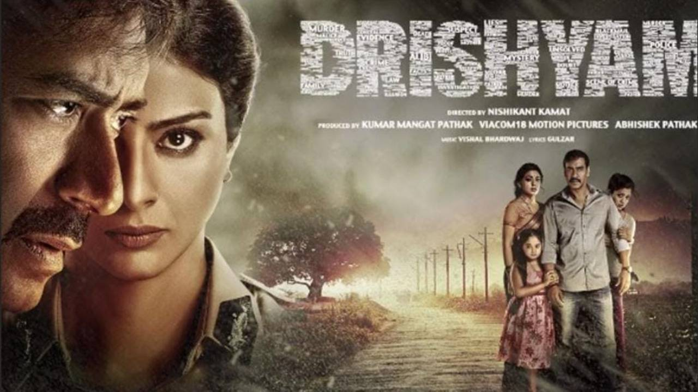

Drama in Bollywood
Drama is the emotional backbone of Bollywood cinema, known for its deep storytelling, intense characters, and rich portrayal of human relationships. Whether centered around family conflicts, social issues, or personal struggles, Bollywood dramas evoke strong emotions and connect with audiences on a profound level.
Key Themes in Drama Films
- Family & Relationships: Exploring love, loyalty, and generational conflict (e.g., Kabhi Khushi Kabhie Gham).
- Social Justice: Stories tackling inequality and reform (e.g., Drishyam).
- Coming-of-Age: Personal growth and self-discovery (e.g., Taare Zameen Par).
- Historical & Biographical: Real-life inspired tales (e.g., Neerja).
Notable Drama Films
- Mother India (1957, dir. Mehboob Khan)
- Kabhi Khushi Kabhie Gham (2001, dir. Karan Johar)
- Taare Zameen Par (2007, dir. Aamir Khan)
- Drishyam (2015, dir. Nishikant Kamat)
- Neerja (2016, dir. Ram Madhvani)
|

|